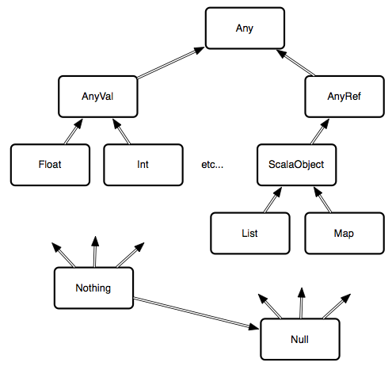

Scala is ...
- Created by Martin Odersky
- A multi-paradigm programming language
- Object-oriented
- Funtional
- Its type system is:
- Statically typed
- Strongly typed
- Structurally typed
- Uses type inference
- Built on top of the Java Virtual Machine (JVM)
Scala is ...
A major reason why companies are switching to Scala is because it is familiar (Java similarities) and easy to deploy (JVM), but more importantly, it is scalable due to its functional nature.
A purely functional language asserts that: A function always returns a value Given the same inputs, a function will always return the same values * Functions will avoid mutating data
Because data is immutable, it is easy to make programs concurrent. A program simply needs to compute a value from some inputs.
Scala is not a purely functional language because it does not guarantee immutability; IO, for example, invalidates the immutability.
Scala really is object-oriented; every value is an object, even what we would call primitives in Java. This includes integers, strings, etc.
Scala autoboxes and unboxes values as necessary.
Scala uses a lot of syntactic sugar to make your life easier, despite everything being an object.
Infix operators are just methods in a class that take a single parameter.
Common Scala types include: Byte, Char, Short, Int, Long, Float, Double, Boolean, and String.
There are several classes that augment already existing classes. Ones such as StringOps, RichInt, RichChar, etc. that add many more methods to an object. This is usually transparent thanks to implicit type conversion.
Like in Ruby, Scala is strongly typed, but Scala can also do that type checking at compile time.
Unlike Java, Scala will use type inference to understand the types of variables through syntactical clues, so you don’t have to type val a : Int = 1, though you can if you want.
Expressions can be stored as values or variables, using the val or var keywords respectively. In Scala, it is idiomatic to avoid variables; remember, mutable state is bad.
In the REPL, Scala will store unnamed expressions in a value called res_ where _ indicates a number.
Scala's strong type system means that only Boolean values can be evaluated in an if/else statement. This is much stricter than Ruby, where everything evaluates to true except for false and nil.
We have here defined a function that executes a while loop
Note: unlike in Java, you don’t have to specify public. In Scala, public is the default visibility, meaning this function will be visible to all.
The argument is a variable, followed by the <- operator, followed by a range for the loop in the form of initialValue until endingValue.
args is a list with the inbound command-line arguments. Scala passes each element into this block, one by one. In our case, arg is one argument from the inbound args list. In Ruby, the same code would be args.each {|arg| println(arg) }.
1 to 10 => 1..101 until 10 => 1...10A tuple is a fixed-length set of objects of mixed type. You’ll find this pattern in many other functional languages as well.
An Option is a container that may or may not hold something.
The basic interface for Option looks like:
An Option itself is generic and has two subclasses: Some[T] or None
Map.get uses Option for its return type. An Option tells you that the method might not return what you’re asking for.
Use getOrElse to define a default value or use Pattern Matching to switch behaviors
When you declare variables, you should make them immutable whenever you can to avoid conflicting state. In Java, that means using the final keyword. In Scala, immutable means using val instead of var
This basic design philosophy is the key element that differentiates functional programming from object-oriented programming: mutable state limits concurrency.
Simple Class Definition
The same class in Java
The whole block of code following the class definition is actually the constructor.
Also known as Constructor Overloading in Java
Note: the auxiliary constructor calls the primary constructor first with this(firstName)
In Java and Ruby, you create both class methods and instance methods within the same body. In Java, class methods have the static keyword. Ruby uses def self.class_method.
When there’s something that can have only one instance, you’ll define it with the object keyword instead of the class keyword, which creates a singleton object.
In Scala, you can define class methods within the singleton object declaration and instance methods within the class declaration of the same name.
You must specify the complete parameter list for Person, though you can omit the types.
The override keyword, both in the constructor and for any methods you want to extend from the base class, is mandatory. This keyword will keep you from inadvertently introducing new methods with misspellings.
Every object-oriented language must solve the problem that one object can have several different roles. C++ uses multiple inheritance, Java uses interfaces, Ruby uses mixins, and Scala uses traits.
A Scala trait is a partial-class implementation that deals with a particular concern, like a Ruby mixin implemented with modules or a Java interface plus an implementation.
Types allow you to denote domain & codomains of functions and values.
Given these annotations, the compiler can now statically, meaning at compile time, verify that the program is sound. That is, compilation will fail if values (at runtime) will not comply to the constraints imposed by the program.
Generally speaking, the typechecker can only guarantee that unsound programs do not compile. It cannot guarantee that every sound program will compile.
Note that all type information is removed at compile time. It is no longer needed. This is called erasure.
val i: Int = 12: IntWe will look at the first two.
For more information, see Scala School Advanced Types
Polymorphism is used in order to write generic code (for values of different types) without compromising static typing richness.
Polymorphism is achieved through specifying type variables.
In Scala all type inference is local, meaning Scala considers one expression at a time.
Variance: constraints within a type system
| Meaning | Scala Notation | |
|---|---|---|
| covariant | C[T’] is a subclass of C[T] |
[+T] |
| contravariant | C[T] is a subclass of C[T’] |
[-T] |
| invariant | C[T] and C[T’] are not related |
[T] |
An example of Variance used in the Function1 trait:
You can introduce Bounds to further constraint the polymorphism.

Everything inherits from Any, and Nothing inherits from everything.
So a function can return Nothing to conform any return type it requires.
Null is a Trait, and null is an instance of it that works like Java’s null, meaning an empty value.
By contrast, Nothing is a trait that is a subtype of everything.
Nothing has no instance, so you can’t dereference it like Null.
For example, a method that throws an Exception has the return type Nothing, meaning no value at all.
A function declaration consists of 4 parts
def keyword, which defines both a function and a method= as the bodyTo invoke the function, just use the name and the argument list.
You can leave off parentheses on functions with no arguments
Create anonymous functions with (arguments) => expression for simple functions or (arguments) => { expressions } or { (arguments) => expressions } for more complex ones.
You can pass anonymous functions around or save them into vals or vars. Hence, functions are first class in Scala.
A function is an object with the FunctionX with an apply method
A method is a function declared with the def keyword
If f is a function and m is a method local to the scope, then both can be called like this:
val o1 = f(List(1, 2, 3))
val o2 = m(List(1, 2, 3))
These calls are actually different, because the first one is just a syntactic sugar. Scala expands it to:
val o1 = f.apply(List(1, 2, 3))
Which, of course, is a method call on object f.
Syntactic sugars!
Function Literals
Type Signatures
They are slightly faster, since they have less overhead (i.e. no apply call)
They can receive type parameters. For instance, while f above can necessarily specify the type of List it receives (List[Int] in the example), m can parameterize it:
To convert m to f
You can partially apply a function with an _, which gives you another function.
Scala uses the underscore to mean different things in different contexts, but you can usually think of it as an unnamed magical wildcard.
You can partially apply any argument in the argument list, not just the last one.
Sometimes it makes sense to let people apply some arguments to your function now and others later. This is called currying.
Here’s an example of a function that lets you build multipliers of 2 numbers together. You can call it directly with 2 parameters, or you can decide on a multiplier at one call site, and choose a multipicand at a later call site.
apply methods give you a nice syntactic sugar for when a class or object has one main use.
A Function is a set of traits. Specifically, a function that takes one argument is an instance of a Function1 trait. This trait defines the apply() syntactic sugar we learned earlier, allowing you to call an object like you would a function.
There is Function0 through 22.
The syntactic sugar of apply helps unify the duality of object and functional programming. You can pass classes around and use them as functions and functions are just instances of classes under the covers.
Classes can also extend Function and those instances can be called with ().
A List is an ordered collection of like things with random access
Operators:
(n) to access nth element:+ to append an element++ or ++: to append a list:: to prepend an element::: to prepend a list:\ to foldRight. xs :\ z is the same as xs foldRight z/: to foldLeft. z /: xs is the same as xs foldLeft zA Set is an unordered collection of unique like things with no explicit order
Operators:
+ to add an element- to remove an element++ or | to compute set union-- or &~ to compute set difference** or & to compute set intersection:\ to foldRight. xs :\ z is the same as xs foldRight z/: to foldLeft. z /: xs is the same as xs foldLeft zSet operations are not destructive. Each set operation builds a new set rather than modifying the old ones. By default, sets are immutable
A Map is a collection of key-value pairs, like a Ruby Hash
Operators:
(key) to access the value corresponding to key+ to add 1 or more pairs++ or ++: to compute map union- to remove 1 or more pairs-- to compute map difference:\ to foldRight. xs :\ z is the same as xs foldRight z/: to foldLeft. z /: xs is the same as xs foldLeft zA higher-order function is one that takes other functions as input parameters or returns functions as output
The foreach method on a collection takes a code block as a parameter in the form of argument => expression, which is an anonymous function
In the form of (initialValue /: list) codeBlock
Functional languages use currying to transform a function with multiple parameters to several functions with their own parameter lists.
Use foldLeft or foldRight to compute the total size of a list of strings.
Pattern matches (x match { ... }) are pervasive in well written Scala code: they conflate conditional execution, destructuring, and casting into one construct. Used well they enhance both clarity and safety.
One of the most useful parts of Scala.
Notice how we captured the value in the variable i
The _ in the last case statement is a wildcard. It ensures that we can handle any statement. Otherwise you will suffer a runtime error if you pass in a number that doesn't match.
Case Classes are used to conveniently store and match on the contents of a class and designed to be used with pattern matching. You can construct them without using new.
They automatically have equality and nice toString methods based on the constructor arguments.
They can also have methods just like normal classes.
Note: c@Calculator(_, _) rebinds the matched value to c
We've discussed asynchronous computations earlier in JavaScript. We also mentioned that you can deal with it using Futures and Promises.
A Future represents a (typically long-running) asynchronous computation. In other words, it's work that we expect to get accomplished later that we don't have to wait on.
A Promise represents the underlying data that is promised to be delivered. A Future always has a one-to-one relationship with a Promise; typically, the Promise is abstracted away though (in Scala at least).
A future can be thought of as an expected return on a promise. Whereas, a promise can be thought of as the payload to be delivered.
Once a promise is completed by either a success or failure, it notifies the future of its completion. The work of the promise is typically executed in a separate thread from the future.
We won't cover promises explicitly, but we'll cover scala.concurrent.Future
Actors are another abstraction used to achieve concurrency. Rather than using shared memory, actors share nothing and instead pass messages. Each actor encapsulates its own state and is unaware of the state of any other actors. To receive messages, each actor has an addressable mailbox that is based on an asynchronous, race-free, non-blocking queue.
Other forms of concurrency using shared memory have to deal with race conditions, contention, and deadlocks; however, actors are inherently concurrent due to the immutability of messages and encapsulation of behavior.
Each Actor is responsible for:
You can almost think of it as a system of distributed callbacks.
The Actor implementation that we'll be going over is the one native to the Scala library; however, there are many more powerful and robust alternatives such as Akka actors.
Scala actors are based on event objects running on Java thread pools. So they are suspended until a they receive a message that matches a pattern they can react to.
Let's just take a look at an example using Rock Paper Scissors.
The idea is that a coordinator will tell 2 players to throw their hands, but a race condition exists (either one could actually throw first). So the coordinator must wait for both players to show their hand.
We could resolve this using semaphores or other forms of concurrency. However, using actors is often simpler to reason about. Although this example is a bit small, it's much easier to manage in larger systems.
Dispatch is a popular HTTP client library for Scala.
It makes heavy use of promises.
More notably, it's incredibly hard to read due to its cryptic operators
Both Akka and Play are Scala frameworks produced by a company called Typesafe. Scala, Akka, and Play together make up the Typesafe Stack. These technologies together make up a highly scalable, event-driven web framework.
Akka, as previously mentioned, is a library that implements a more advanced actor system than what's offered in Scala's standard library. A few advantages are that: it offers better fault tolerance, scalability over many nodes, and transactional actors (transactors).
Play follows a Model-View-Controller (MVC) paradigm in terms of a web applications structure. Play scales well because it uses Akka behind the scenes, and the toolchain offers integration with many useful technologies: CoffeeScript, LESS, Websockets, Comet, NoSQL, big data.
Scala is a general purpose programming language designed to express common programming patterns in a concise, elegant, and type-safe way. It smoothly integrates features of object-oriented and functional languages. It's a statically and strongly typed language that compiles to Java Byte Code to run on the JVM.